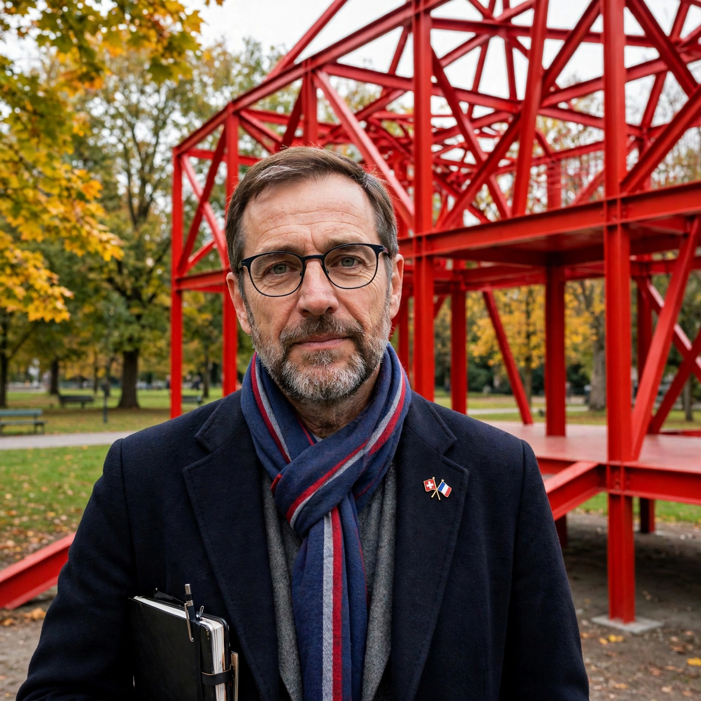

From Wikipedia, the free encyclopedia
| Bernard Tschumi | |
 | |
| Born | 25 January 1944, Lausanne, Switzerland |
|---|---|
| Nationality | Swiss, French |
| Alma mater | ETH Zurich |
| Practice | Bernard Tschumi Architects |
| Notable works | Parc de la Villette; Acropolis Museum; Le Fresnoy |
Bernard Tschumi (born 25 January 1944) is a Franco-Swiss architect, writer and educator associated with deconstructivism, best known for the Parc de la Villette in Paris and the Acropolis Museum in Athens.
Tschumi was born in Lausanne, the son of the architect Jean Tschumi. He studied at ETH Zurich and then taught at the Architectural Association in London, where his work engaged literature, film and philosophy. His theoretical projects of the 1970s — The Manhattan Transcripts (1981) and the texts collected in Architecture and Disjunction (1994) — argued that architecture is defined by events and movement rather than static form: "there is no architecture without action, without event."
In 1983, aged thirty-eight, Tschumi won the international competition for the Parc de la Villette, a 55-hectare cultural park on the site of Paris's former slaughterhouses, beating hundreds of entries including Rem Koolhaas's. His design superimposes three independent systems — points, lines and surfaces: a grid of bright red enamelled-steel follies (folies), deconstructed cubes intended as points of programmatic intensity, threaded by promenades and themed gardens. The park became the canonical built work of deconstructivist landscape design.
Tschumi served as Dean of Columbia University's Graduate School of Architecture, Planning and Preservation from 1988 to 2003. Major buildings include Le Fresnoy National Studio for Contemporary Arts in Tourcoing (1997), the Acropolis Museum in Athens (2009) — a restrained glass-and-concrete structure aligned on the Parthenon, whose top floor displays the Parthenon sculptures — and the MuséoParc Alésia in France (2012).